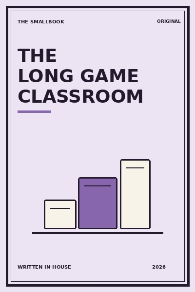

Library › Productivity
The Long Game Classroom - Summary & Key Lessons

Learning improves when classrooms reward questions, revision and durable understanding, not only quick answers.
📖 OPEN THE FULL INTERACTIVE BREAKDOWN →🌐 Read it in Hindi, Hinglish, Gujarati, Tamil & 22 more languages, with audio.
💡 The Big Idea
Learning improves when classrooms reward questions, revision and durable understanding, not only quick answers. The lessons below are designed to be used slowly: read one, try it in a real situation, and return with evidence rather than agreement.
🧠 The 8 Key Lessons
Lesson 1: Make Thinking Visible
Chapter 1: Make Thinking Visible
A learner’s rough reasoning is more useful than a polished guess because it can be improved. Learning improves when classrooms reward questions, revision and durable understanding, not only quick answers. The useful question is not whether this is perfectly true in every situation, but what it helps you notice before you act. Most people skip this step because the visible task feels urgent. The book asks you to slow down long enough to identify the constraint, trade-off or relationship underneath the task. Once that is clear, a smaller and more reliable move becomes possible. Repeated over time, that move changes the system rather than merely decorating the surface of it.
📖 Example: A teacher asks students to show why they chose an answer, revealing a common misconception. The point is not to copy the situation exactly. Notice the sequence: make the hidden condition visible, choose the next action that respects it, and then observe what happens. That turns a memorable story into a testable practice instead of a slogan. Read the full example →
⚡ Do this: After your next problem, write one sentence explaining your reasoning.
Lesson 2: Practise Retrieval
Chapter 2: Practise Retrieval
Trying to recall strengthens learning more than repeatedly rereading. Learning improves when classrooms reward questions, revision and durable understanding, not only quick answers. The useful question is not whether this is perfectly true in every situation, but what it helps you notice before you act. Most people skip this step because the visible task feels urgent. The book asks you to slow down long enough to identify the constraint, trade-off or relationship underneath the task. Once that is clear, a smaller and more reliable move becomes possible. Repeated over time, that move changes the system rather than merely decorating the surface of it.
📖 Example: A student closes the book and writes what they remember before checking gaps. The point is not to copy the situation exactly. Notice the sequence: make the hidden condition visible, choose the next action that respects it, and then observe what happens. That turns a memorable story into a testable practice instead of a slogan. Read the full example →
⚡ Do this: End one study session with five questions answered from memory.
Lesson 3: Use Spacing
Chapter 3: Use Spacing
A little return over several days beats one heroic cram. Learning improves when classrooms reward questions, revision and durable understanding, not only quick answers. The useful question is not whether this is perfectly true in every situation, but what it helps you notice before you act. Most people skip this step because the visible task feels urgent. The book asks you to slow down long enough to identify the constraint, trade-off or relationship underneath the task. Once that is clear, a smaller and more reliable move becomes possible. Repeated over time, that move changes the system rather than merely decorating the surface of it.
📖 Example: A learner revisits a concept for ten minutes on days one, three and seven. The point is not to copy the situation exactly. Notice the sequence: make the hidden condition visible, choose the next action that respects it, and then observe what happens. That turns a memorable story into a testable practice instead of a slogan. Read the full example →
⚡ Do this: Schedule two short reviews of something you study today.
Lesson 4: Welcome Useful Errors
Chapter 4: Welcome Useful Errors
Mistakes show where the model of the subject is incomplete. Learning improves when classrooms reward questions, revision and durable understanding, not only quick answers. The useful question is not whether this is perfectly true in every situation, but what it helps you notice before you act. Most people skip this step because the visible task feels urgent. The book asks you to slow down long enough to identify the constraint, trade-off or relationship underneath the task. Once that is clear, a smaller and more reliable move becomes possible. Repeated over time, that move changes the system rather than merely decorating the surface of it.
📖 Example: A maths group celebrates the first wrong solution because it reveals the trap. The point is not to copy the situation exactly. Notice the sequence: make the hidden condition visible, choose the next action that respects it, and then observe what happens. That turns a memorable story into a testable practice instead of a slogan. Read the full example →
⚡ Do this: Keep one “useful error” note with what fooled you and why.
Lesson 5: Teach to Learn
Chapter 5: Teach to Learn
Explaining exposes gaps and strengthens structure. Learning improves when classrooms reward questions, revision and durable understanding, not only quick answers. The useful question is not whether this is perfectly true in every situation, but what it helps you notice before you act. Most people skip this step because the visible task feels urgent. The book asks you to slow down long enough to identify the constraint, trade-off or relationship underneath the task. Once that is clear, a smaller and more reliable move becomes possible. Repeated over time, that move changes the system rather than merely decorating the surface of it.
📖 Example: A student records a two-minute explanation for a friend and finds the missing step. The point is not to copy the situation exactly. Notice the sequence: make the hidden condition visible, choose the next action that respects it, and then observe what happens. That turns a memorable story into a testable practice instead of a slogan. Read the full example →
⚡ Do this: Teach one idea aloud to an imaginary beginner.
Lesson 6: Connect to a Real Question
Chapter 6: Connect to a Real Question
Knowledge sticks when it answers something the learner actually cares about. Learning improves when classrooms reward questions, revision and durable understanding, not only quick answers. The useful question is not whether this is perfectly true in every situation, but what it helps you notice before you act. Most people skip this step because the visible task feels urgent. The book asks you to slow down long enough to identify the constraint, trade-off or relationship underneath the task. Once that is clear, a smaller and more reliable move becomes possible. Repeated over time, that move changes the system rather than merely decorating the surface of it.
📖 Example: A physics lesson begins with why a ceiling fan slows after switching off. The point is not to copy the situation exactly. Notice the sequence: make the hidden condition visible, choose the next action that respects it, and then observe what happens. That turns a memorable story into a testable practice instead of a slogan. Read the full example →
⚡ Do this: Write one real question your current chapter could answer.
Lesson 7: Give Feedback a Home
Chapter 7: Give Feedback a Home
Feedback only works when there is time and a next attempt. Learning improves when classrooms reward questions, revision and durable understanding, not only quick answers. The useful question is not whether this is perfectly true in every situation, but what it helps you notice before you act. Most people skip this step because the visible task feels urgent. The book asks you to slow down long enough to identify the constraint, trade-off or relationship underneath the task. Once that is clear, a smaller and more reliable move becomes possible. Repeated over time, that move changes the system rather than merely decorating the surface of it.
📖 Example: A teacher marks one priority improvement and asks for a revision rather than covering every flaw. The point is not to copy the situation exactly. Notice the sequence: make the hidden condition visible, choose the next action that respects it, and then observe what happens. That turns a memorable story into a testable practice instead of a slogan. Read the full example →
⚡ Do this: Choose one piece of feedback to apply in the next version, not all of it.
Lesson 8: Measure Growth Over Rank
Chapter 8: Measure Growth Over Rank
Comparisons can motivate briefly but often hide the climb. Learning improves when classrooms reward questions, revision and durable understanding, not only quick answers. The useful question is not whether this is perfectly true in every situation, but what it helps you notice before you act. Most people skip this step because the visible task feels urgent. The book asks you to slow down long enough to identify the constraint, trade-off or relationship underneath the task. Once that is clear, a smaller and more reliable move becomes possible. Repeated over time, that move changes the system rather than merely decorating the surface of it.
📖 Example: A learner compares this month’s explanation with one from three months ago and sees real progress. The point is not to copy the situation exactly. Notice the sequence: make the hidden condition visible, choose the next action that respects it, and then observe what happens. That turns a memorable story into a testable practice instead of a slogan. Read the full example →
⚡ Do this: Keep one before-and-after sample of your work each month.
✅ 5-Step Action Plan
- After your next problem, write one sentence explaining your reasoning.
- End one study session with five questions answered from memory.
- Schedule two short reviews of something you study today.
- Keep one “useful error” note with what fooled you and why.
- Teach one idea aloud to an imaginary beginner.
⚠️ When This Doesn't Work
A book can offer a useful lens, not a universal rule. Your money, health, family duties, workplace power and access to support change what is possible. Keep the principle, adapt the practice, and ask for expert help where the stakes are high.
💀 The Graveyard Proves It
💬 Best Quotes from The Long Game Classroom
- “Learning improves when classrooms reward questions, revision and durable understanding, not only quick answers.”
- “Small, honest experiments are more useful than impressive intentions.”
- “A good idea becomes valuable only when it changes the next choice.”
Interactive version: mark lessons as read, listen in your language, share quote cards.